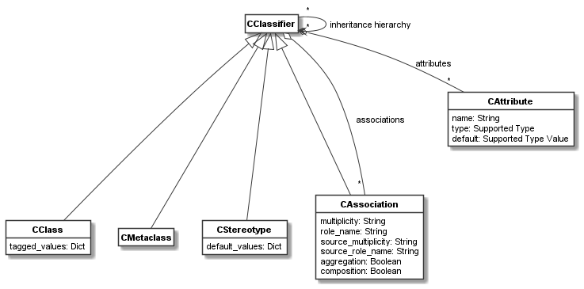

codeable_models.CClassifier¶
-
class
codeable_models.CClassifier(name=None, **kwargs)¶ CClassifieris superclass of classifiers such asCClassandCMetaclassdefining common features for classifiers. The class is usually not used directly but its features are used from the subclasses.Superclasses:
CBundlable- Parameters
name (str) – An optional name.
**kwargs –
Pass in any kwargs acceptable to superclasses. In addition,
CClassifieraccepts:attributes,superclasses.The
attributeskwarg accepts a dict of attributes in the form acceptable to theattributesproperty.The
superclasseskwarg accepts a list of superclasses in the form acceptable to thesuperclassesproperty.
Examples:
The following code uses the
superclassesandattributesfeatures ofCClassifierduring a class definition and then uses theassociationfeature to define an association for a class:customer = CClass(domain_metaclass, "Customer", superclasses=person, attributes={ "id": str, "shipping addresses": [], }) customer.association(cart, "shops with: [customer] 1 <*>- [cart] 1")
Main Relations:
The main relations of
CClassifierare shown in the figure below.As can be seen,
CClass,CMetaclass, andCStereotypeare classifiers, as could be expected. In addition,CAssociationis a classifier, which might be a less obvious design choice. It is a classifier, so that aCLinkcan be an object. That is, the association is the classifier of the link. This way links can be referenced and treated as objects.The associations, attributes, and inheritance hierarchy of a classifier are managed by the methods of
CClassifier.-
property
all_associations¶ Getter listing all associations of this classifier including those of superclasses.
- Type
list[CAssociation]
-
property
all_subclasses¶ Getter that returns all subclasses of this classifier on the inheritance hierarchy.
- Type
list[CClassifier]
-
property
all_superclasses¶ Getter that returns all superclasses of this classifier on the inheritance hierarchy.
- Type
list[CClassifier]
-
association(target, descriptor=None, **kwargs)¶ Method used to create associations on this classifier. Returns the
CAssociationthat is created.- Parameters
target – The association target classifier.
descriptor – An optional descriptor making it easier to define associations with a simple string.
**kwargs – Accepts all keyword arguments acceptable to
CAssociationto define associations.
- Returns
The created association.
- Return type
For explanation of descriptor syntax and supported keyword arguments see documentation of the constructor of
CAssociation.
-
property
associations¶ Getter listing associations of this classifier.
- Type
list[CAssociation]
-
property
attribute_names¶ Returns a list of all attribute names defined for this classifier.
Examples are provided in the document Class attributes.
- Type
list[str]
-
property
attributes¶ Property that gets the list of attributes of a classifier or sets them using a dictionary.
All attributes are internally stored as
CAttributeobjects. The getter returns the list of all attributes asCAttributeobjects.For the setter,
Noneor{}can be used to remove all attributes from the classifier.Each attribute in the dict is specified using the form:
attributeName: <type|default-value|CAttribute>
Possible types of attributes are:
bool: a booleanint: an integerfloat: a floating point numberstr: a stringlist: a Python listenumeration values: An object of type
CEnumis the type and enumeration values are used as attribute values.objects: A class of type
CClassifieris the type andCObject’s are used as attribute values. Please note this might beCClassas a type withCObjectobjects, orCMetaclassas a type withCClassobjects.CAttributeobjects: AnCAttributeobject describes an attribute, i.e., its type and default value.
Example: The following code initialized one
intand oneboolattribute, each with a default value, and it defines another string attribute using thestrtype:game = CClass(metaclass, "Game", attributes={ "number_of_players": 1, "game_started": False, "player_id": str })
game.attributesreturns the list of attributes asCAttributeobjects.More examples are provided in the document Class attributes.
- Type
dict[str, CAttribute | Attribute Type | Default Value]
-
property
class_path¶ Superclasses are processed using a linerarized class path. This path unambiguously orders the superclasses for each classifier, from lower-level to higher-level classes. At the same level, classes will be ordered in the same order as specified in the
superclassesdefinitions. If a classifier appears multiple times on the class path, i.e. it is reachable via different paths, the first appearance is chosen.This getter returns all superclasses in the order of the class path.
- Type
list[CClassifier]
-
delete()¶ Deletes the classifier, removes superclasses, removes it from subclasses, removes all associations and attributes, and removes the classifier from bundles. Calls
delete()on superclass.
-
get_attribute(attribute_name)¶ Returns the
CAttributeobject that conforms to the provided attribute name. If none is found,Noneis returned.Examples are provided in the document Class attributes.
- Returns
The attribute conforming to the attribute name.
- Return type
-
has_subclass(classifier)¶ Returns
Trueifclassifieris subclass of this classifier, elseFalse.- Parameters
classifier – The classifier to test.
- Returns
Boolean result of the check
- Return type
bool
-
has_superclass(classifier)¶ Returns
Trueifclassifieris superclass of this classifier, elseFalse.- Parameters
classifier – The classifier to test.
- Returns
Boolean result of the check
- Return type
bool
-
is_classifier_of_type(classifier)¶ Checks if the classifier conforms to the provided classifier’s type.
- Parameters
classifier – A
CClassifierto check against.- Returns
Boolean result of the check.
- Return type
bool
-
property
subclasses¶ Getter that returns the subclasses of this classifier.
- Type
list[CClassifier]
-
property
superclasses¶ Setter to set and getter to return the superclasses of this classifier.
- Type
list[CClassifier]